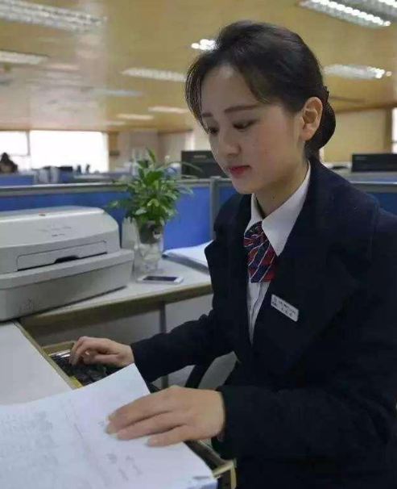

超リアル！コロナウイルスの影響にも関わらず、資産を落ちない、仕事に帰ってオタクで三十日で月収１００k？ 頭條新聞_手機版 2020-09-22 トップニュース スマホバージョン
「信じられない！外出が怖いから家に投資し、簡単に100k儲けた！」当時、Abbyは店員としての自分に少し不信感を抱いて、自分が三十日かけて100Kを稼げたなんて。 副業で収入を上げたいか、付加価値を付ける方法がわからない場合は、このニュースを読むのに数分かかる価値があります。
昔のAbby

Abbyは専門学校を卒業し、銀行の事務員として働きました。 夫は機械修理業者です。3年前に、子供が誕生した以来、夫は生計を立てるために、アルバイトをしなければなりませんでした。若い夫婦は生活と仕事で非常に忙しく、貯蓄もありませんでした。 その後、友達がその女性の生活が辛いからラインアカウントを彼女に勧めて、 投資を学ぶだけでなく、先生からの情報により投資を操り、儲けることができます。最初、Abbyはインターネットに精通しておらず、投資ソフトウェアが何であるかも知りませんでした。 しかし幸いには、彼女は先生を真剣に勉強しました。
今のAbby
2020年二月、Abbyは投資を始め、先生の投資チェットグループにも参加し、彼女にとって激変が始まりました。
投資を学びたいなら、顧問先生のLine ID:ha1423
を追加
クリックしてライン友達を追加